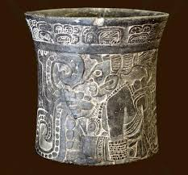
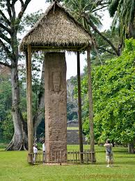
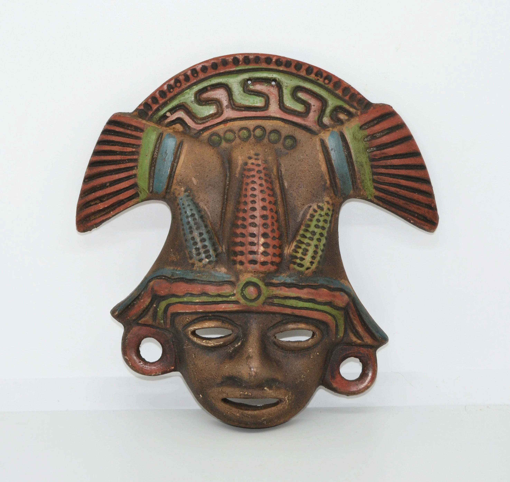
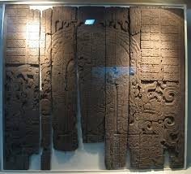
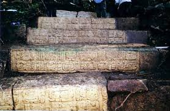
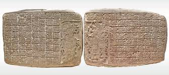

Reliquia 1

Vaso de los Glifos (Tikal)
Una pieza cerámica policromada con escritura jeroglífica que detalla linajes reales y rituales sagrados.
Fecha estimada: XXXInterpretación de los glifos mayas que narran el ascenso de los señores de la selva petenera.
Más información sobre las reliquias de Guatemala...

Una pieza cerámica policromada con escritura jeroglífica que detalla linajes reales y rituales sagrados.
Fecha estimada: XXX
Es el monumento monolítico más alto del Nuevo Mundo (10.6 metros), famosa por sus intrincados relieves y precisión calendárica.
Fecha estimada: XXX
Una impresionante friso de estuco rojo que muestra las diferentes fases del sol mientras atraviesa el inframundo.
Fecha estimada: XXX
Tallado en madera de chicozapote, muestra al rey Yax Nuun Ayiin II en una ceremonia tras una victoria militar.
Fecha estimada: XXX
Una serie de escalones tallados que narran las sangrientas guerras entre Tikal y Calakmul.
Fecha estimada: XXX
Una obra maestra de la escultura en piedra que muestra al gobernante local interactuando con deidades en un nivel de detalle asombroso.
Fecha estimada: XXX